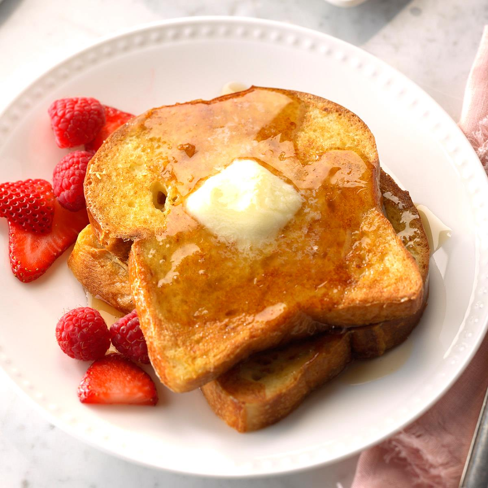

Aaron's Recipes for Delicious Breakfast and Sweets
French Toast

See recipe page
here
Ingredients
Directions
2 large eggs
1 cup of milk
a pinch of salt
1 tablespoon of granulated sugar
1 teaspoon of ground cinnamon
around 6-8 slices of bread (up to your discretion)
a slice of butter